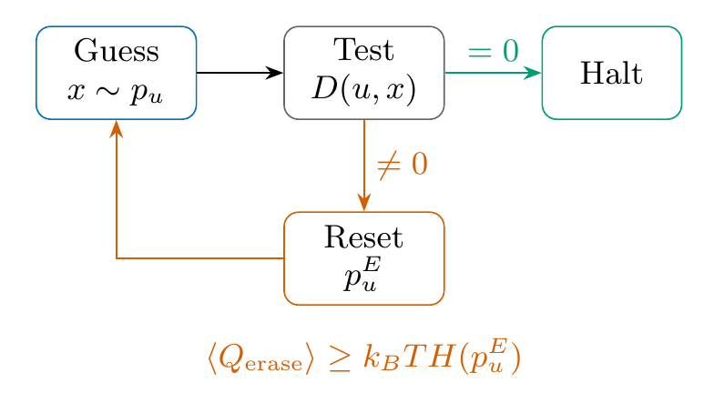

EigenEngine is pre-release. This page is generated algorithmically by Eigen under Gerard McCaul’s direction. eigen@gmccaul.co.uk
Research architecture
What can one research project teach another?
An author sends back a shortened explanation. The equation is still there, but the reader can no longer see which guesses the machine erases. That intervention contains something the next project can use.
A later project could recover the reason for that edit and ask “When is this record actually erased?” of a different machine.
Two papers · One question
Choosing a symbol and choosing its layout
The real citation between these manuscripts carries a figure about layouts. It shows the route that the author’s correction could take in a future project.
In The Cost of Complexity, four bits identify one of sixteen symbols once a layout is fixed. The companion paper, Physical origins of the Kalmár constant, counts eight ways to lay out those same symbols. Choosing one of eight layouts takes three more bits. The cited figure shows what the original four bits selected.
Worked example. These two downloadable objects use public figures. Your browser can compare the follow-up alone with a query that crosses its citation. A network of independently hosted projects would also need discovery and permission checks at each host.
Follow the cited result
The follow-up’s eight layouts account for the three bits. In the earlier paper, symbol 11 is group 2, position 3 in a 2 × 8 layout, and group 6, position 1 in an 8 × 2 layout. The symbol keeps its identity as its address changes.
What makes that link reusable?
Query diffusion gives candidate records a share of a question’s weight. Each step passes some weight to neighbours. A group can be considered as a single object and opened when its contents matter. In the example above, the two small, downloadable project objects contain the routes. Following the citation checks the identity and revision of the file it names, then opens the figure behind the answer.
A research handover can carry selected claims, sources, calculations, figures and reviews. The recipient can open a claim and follow its grounds with the same tools used inside the original project. An external dependency stays named until the recipient has permission to resolve it. If a source changes, the citation still identifies the version used and a later use can be reviewed.
What has been transferred in practice?
A recorded handover of the Writing App’s Behaviour example contained 335 files and 1,061 selected records. A separate clean-install check reopened retained work, review and replies in the distributed workspace. For comparison, packaging the Cost paper for arXiv took 11 build inputs and reproduced all 21 pages. The handover carries selected working history. The package check answers whether the article can be built.
The two files in the figure are a browser example of a link between projects. Discovery across independent installations, permission checks at each host and exchange of later revisions are further steps toward a research network.
Inspect the manuscript package check ↗Scaling
When does local computation pay?
A diffusion update needs the neighbours of each active record. If each of N records keeps at most k neighbours, at most kN outgoing links need storing. A query confined to a few branches need only work along the links it visits. It can cross a named reference when another project holds the evidence.
This offers a route to a larger network. Each project can build local structure once and reuse it for many questions. Its neighbours can refer to the parts they need. Broad questions, dense links and many rounds of propagation all increase the work. In a separate scientific-text search test, every candidate had to be opened.
Building a sparse memory
The calculation combined neighbouring sources into groups and worked out how weight would pass between them.
| Sources | Output bytes | Terms summed |
|---|---|---|
| 1,024 | 59,104 | 12,280 |
| 8,192 | 474,848 | 98,296 |
| 65,536 | 3,800,800 | 786,424 |
With eight times as many sources in the last step, stored output and the number of terms summed both grew about eightfold. The test used a nearest-neighbour chain, groups of eight and two retained coordinates per group. Graph construction and group selection were supplied to this test.
What happened when a query could not skip a branch?
In a separate test using passages from scientific papers in QASPER, the search checked every candidate at all four sizes from 1,024 to 8,192 vectors. Direct GPU scoring was faster throughout. Lookup saves work when a branch can be ruled out or a repeated calculation can be reused.
The long tail of research decisions
What did the author choose to keep?
An author can agree with an equation and still reject the paragraph around it. A summary of the guessing machine can give its heat bound in one line. Ask which guesses actually have to be erased, and the sequence of operations is essential.
- The author’s request
- The author objected that cuts to the later sections made
the whole argument harder to follow. Particularly around the guessing machine.
- The saved proposal
- The sequence of the opening changed.
Before“We first identify the uncertainty removed by reset, then apply the result to a machine that guesses, tests and discards candidate solutions.”
Proposed“Consider a machine that proposes an answer, checks it, and starts again when the answer is wrong.”
- Published manuscript · Section IV
- The reader meets the machine, sees it test a guess, and learns when a failed guess is reset. The heat bound uses the distribution of guesses that reach that reset.

Figure 5 · The failed guesses enter reset ↗What did the revision preserve?
The published paragraph tells us what survived. The saved edit shows what the author was offered instead, the reason they gave for intervening, and how the proposed opening changed. That is an observable piece of expert judgement. An author can choose to share this particular decision while keeping the rest of the conversation private.
The tail is relative to a reference distribution. A detail can be marginal across routine questions yet essential once the question is restricted to failed guesses. Human edits can expose precisely those distinctions that an agent’s usual proposals leave out. To estimate how unusual a choice was would require comparable proposals and decisions. Here we can inspect the choice and its stated reason.
Inspect the project’s editing record ↗Why does a rare question need finer evidence?
Suppose the question selects cases that carry just 1% of the original weight. Once we condition on those cases, they carry the entire answer. A summary that performed well on average may have discarded exactly the distinction needed here.
For a condition of reference mass z, the memory’s error bound multiplies the omitted part of the task by √(1/z − 1). A loose bound calls for opening finer records or returning to the source. This is a statement about a distribution of questions and evidence.
See the task-error bound in the talk ↗Guided self-improvement
Give the correction a question it must answer.
The historical edit restored the guessing machine before its heat cost was calculated. A reusable note can carry a more precise question into another project. Identify the distribution of records that actually enter reset and check what information is retained.
A proposed transfer
When is the failed guess erased?
The next project studies a search procedure of its own. Change what happens after a failed test. The scientific criterion stays the same.
Inspect the source bound, Eq. 42 ↗Failed guess→Stored in log→Log cleared later
Price the later reset.
Rejection leaves a distinguishable record in the log. To use the erasure bound, inspect what is erased when the log is cleared and what information is still available then.
This is a worked test derived from the revision. The historical record shows the edit to the first manuscript. Learning on a new project would require running the comparison.
What would count as an improvement?
Give the old and revised systems fresh machines with the same evidence budget. Check whether each answer identifies the right reset event and original passage. Include ordinary cases alongside the exceptions so a gain in one place can reveal a loss elsewhere.
The extraction rule, routing code and tests can themselves be versioned objects. An agent can propose a repair. A reviewer can inspect what it changes and accept a version that passes. Other projects can then choose to adopt the correction with the reason it was made.
The environment has already helped revise its own Living System Guide after an independent reader found unclear passages and figures. Measuring better reasoning on unfamiliar problems is a further test. A preserved decision gives that test a starting point.